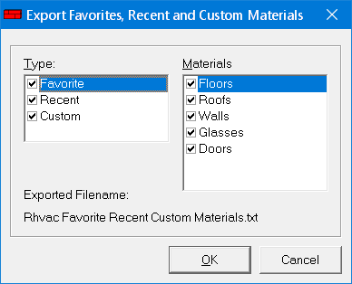

Export Favorites, Recent, Custom Materials to Rhvac Online |
  
|
Export Favorites, Recent, Custom Materials to Rhvac Online |
|
Icon: . Keyboard Shortcut: ALT, F, E, F
Opens the "Export Favorites, Recent and Custom Materials" dialog, where you can choose to export all of your material data to a file that can then be uploaded into the Rhvac Online software. You may export and then upload your materials as many times as you like.

Type: Specifies which types of material lists to include in the file to be created. You must have at least one box checked in order to click OK and create the file. The file that will be created is named, "Rhvac Favorite Recent Custom Materials.txt" and will be located in the folder you specify after clicking OK.
Materials: Specifies which types of room materials to include in the "Rhvac Favorite Recent Custom Materials.txt" file. You must check the box for at least one material type in order to click OK and create the file.
Exported Filename: Shows the name of the file to be created that you may then upload to Rhvac Online. You will decide the folder in which to put the file after you click OK.
OK Button: Opens a Browse for Folder dialog where you may then select a folder in which to create the "Rhvac Favorite Recent Custom Materials.txt" file. After clicking OK, select a folder, then click OK on the Browse for Folder dialog to create the file.
Cancel Button: Closes this dialog without doing anything.
Once you have exported the "Rhvac Favorite Recent Custom Materials.txt" file using the above dialog, you may then upload that file into your account in Rhvac Online. Here are the steps to take:
1.Login to your Rhvac Online account.
2.On My Main Page, open a project.
3.Click the menu, "Loads | Edit Favorites, Recent, Custom Materials".
4.On the "Favorites, Recent and Custom Materials" page click the menu, "Other | Upload Favorites, Recent, Custom".
5.On the "Upload Favorites, Recent, Custom" page click the Browse button. Then find and select the "Rhvac Favorite Recent Custom Materials.txt" file you exported from Rhvac 10.
6.Follow the rest of the instructions on that page.